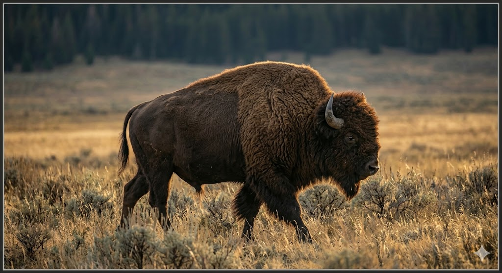

Historical Research Archive
Welcome to the comprehensive archive for the study of the national symbols of the United States. Here you will find detailed etymological analysis, the history of thinkers and creators, and the profound meanings behind each symbol, without compromise.

The United States Flag
Research on Francis Hopkinson, the Betsy Ross legend, and the evolution of the Star-Spangled Banner.
The National Anthem
Analysis of Francis Scott Key's poem, the British melody, and why the final stanzas were censored.

The Great Seal
The arduous journey to adoption, the Latin mottos, and the contributions of Charles Thomson and William Barton.

The Bald Eagle
The symbol of liberty, the polemic with Franklin's turkey, and the misleading etymology of its name.

The American Bison
The National Mammal. The tragedy of near-extinction, and the conservation mission of Roosevelt and Hornaday.

The Oak Tree
The National Tree of the United States. Research is currently underway.